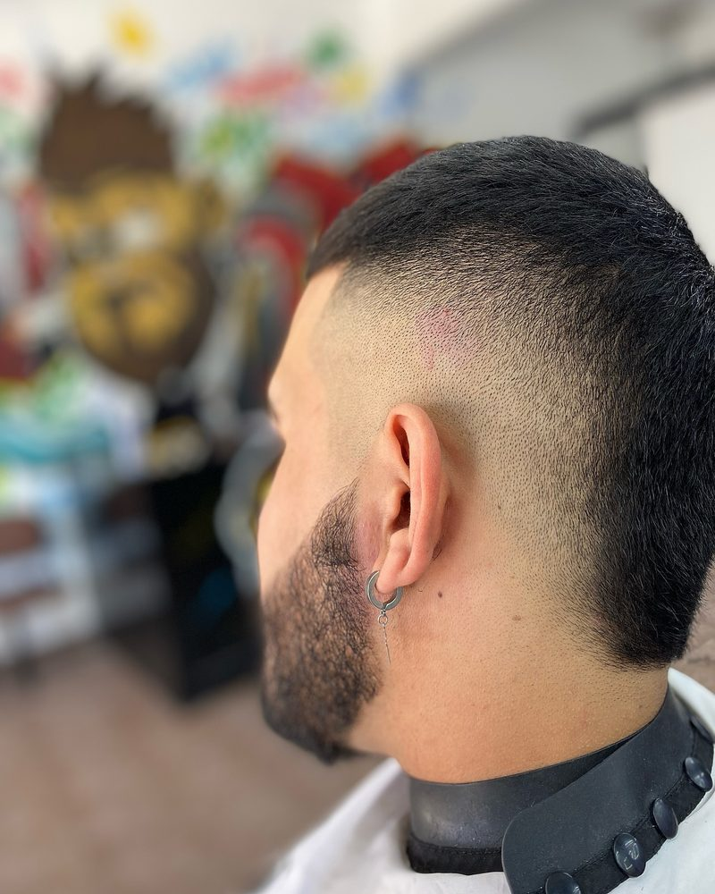
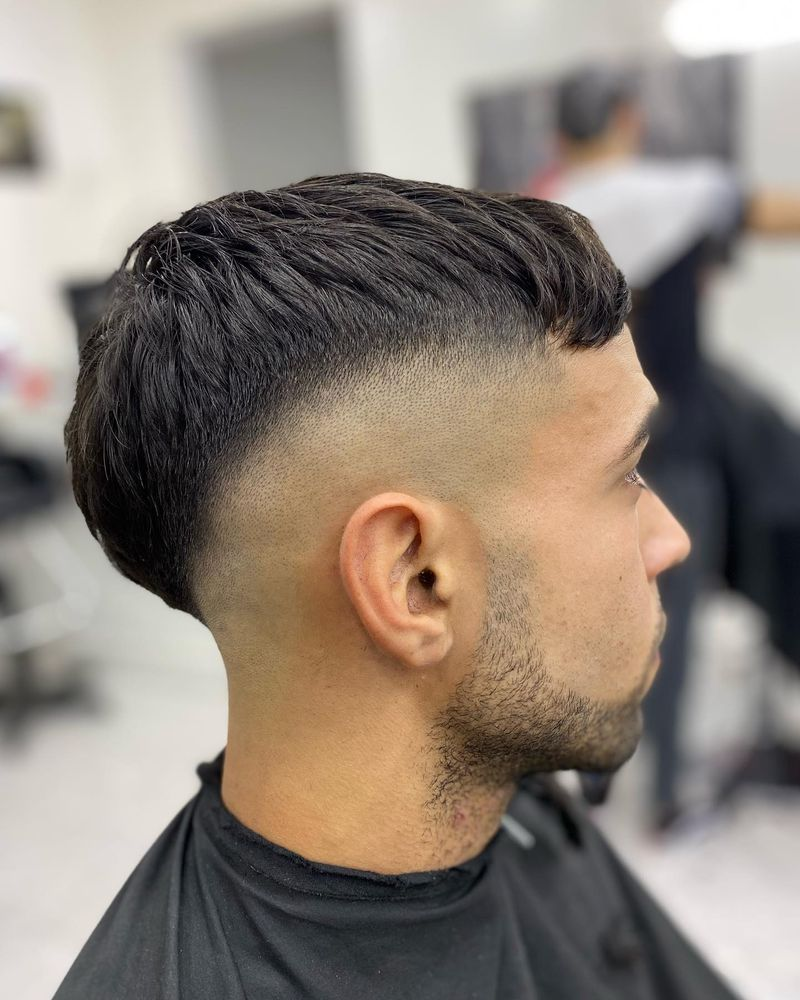
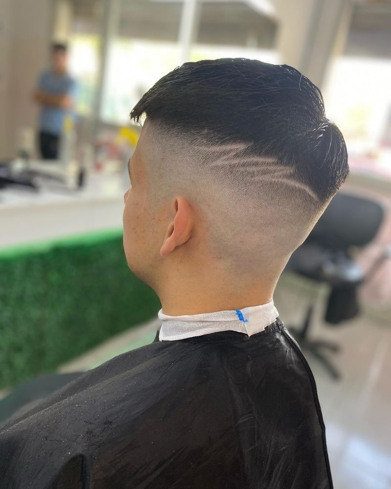
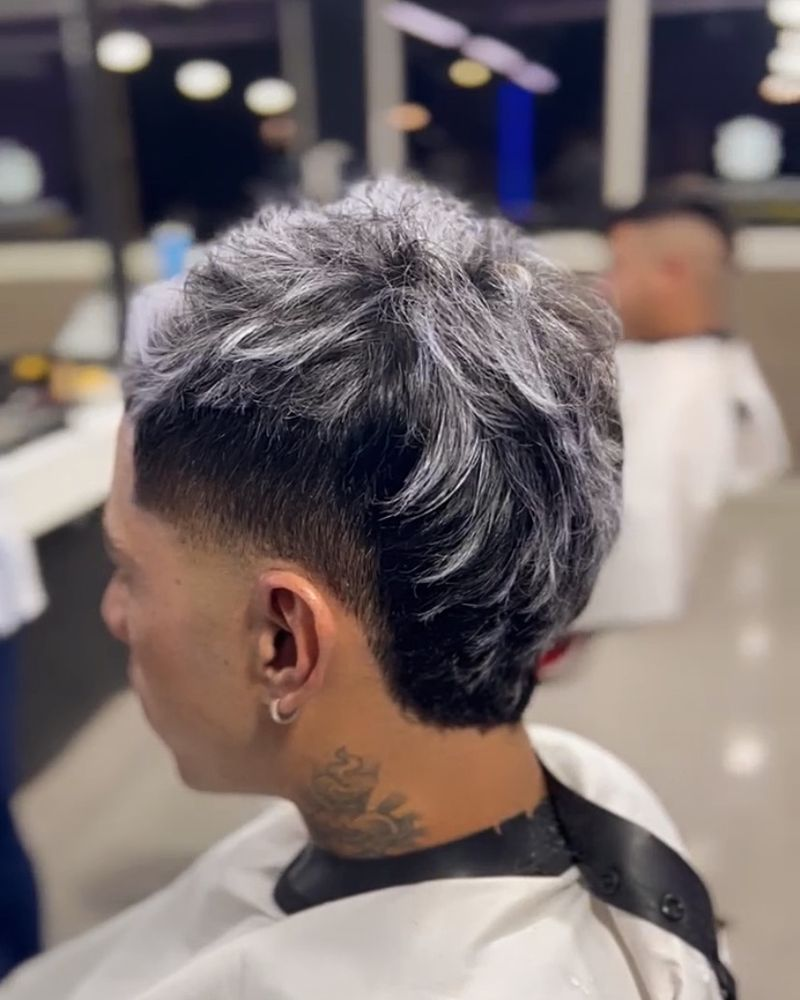
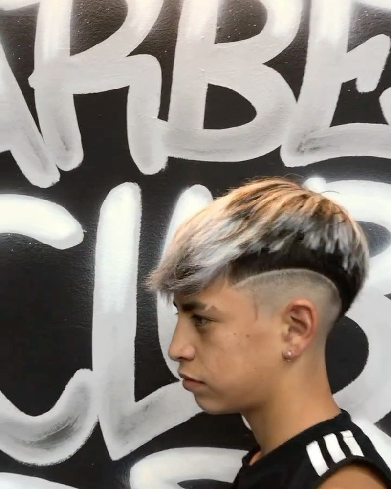
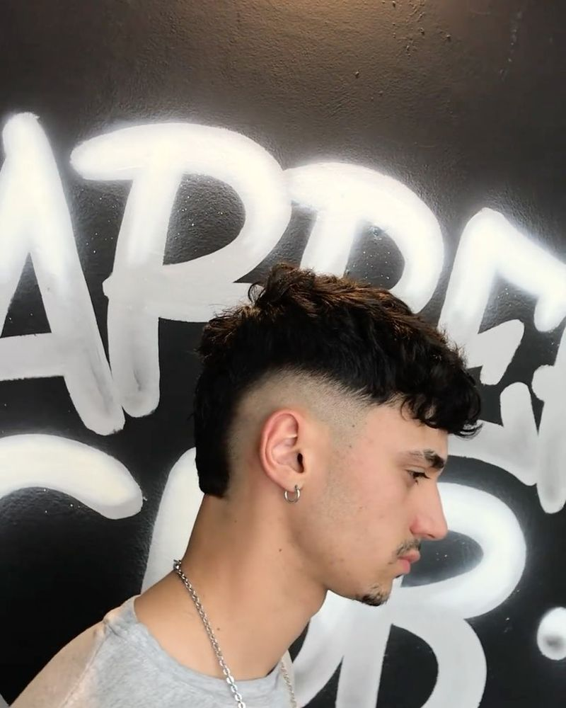
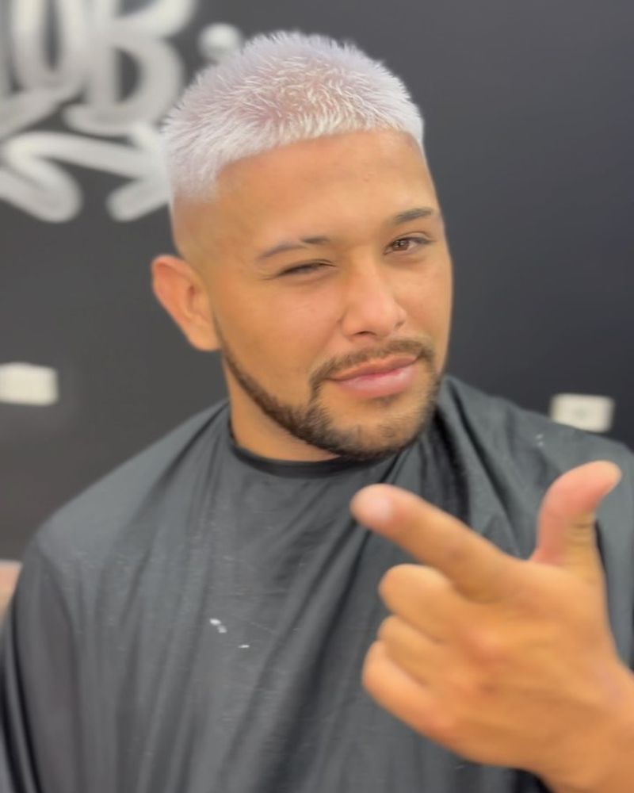
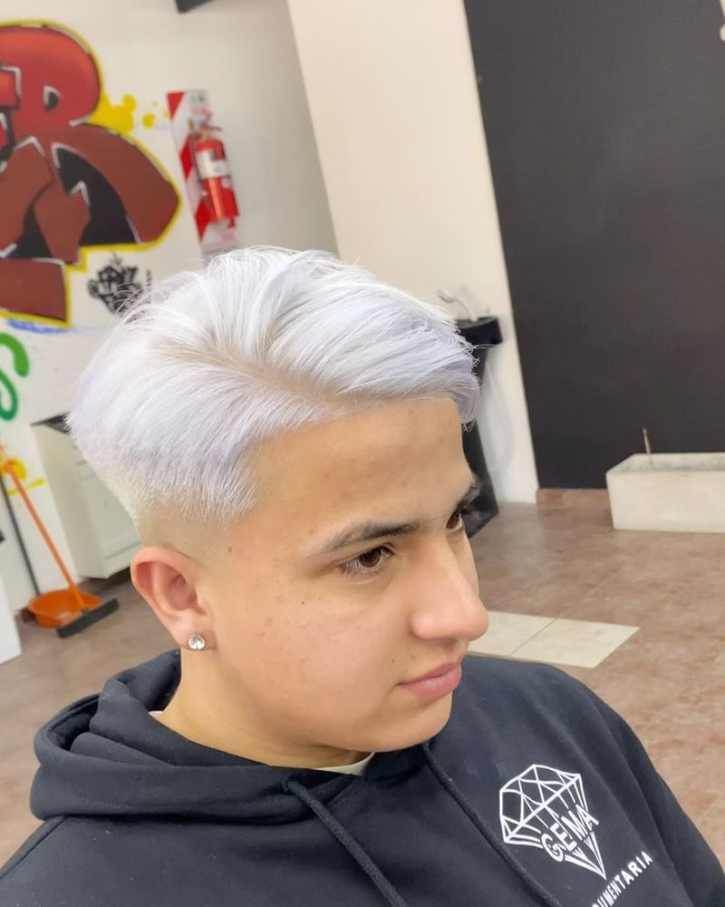

Alt Barbers
Más que un corte.
La nueva barbería de Brian Altamiranda en Bahía Blanca: oficio, buena música y atención uno a uno, con turno.
La casa
Una barbería nueva, con el oficio de siempre.
Alt Barbers es el nuevo espacio de Brian Altamiranda en Bahía Blanca: una barbería propia, armada en su casa, para atender con tiempo y de a un cliente por vez. La idea sigue siendo la misma de siempre: que cada uno salga con un corte del que esté orgulloso.
Luz de neón, buena música y atención uno a uno. Se trabaja solo con turno, así que no hay esperas: llegás, te sentás y tu corte lleva el tiempo que necesita.
El barbero
Las manos detrás del oficio.
Brian Altamiranda es barbero especialista en color y fades. Se capacita constantemente en seminarios y también enseña: dicta cursos de peluquería y barbería básica para quienes quieren empezar en el oficio.
- Fades: high, mid, low y taper
- Color, mechas y platinados
- Diseño de barba y cejas
- Cursos de barbería básica
“El corte lo hacemos nosotros. El estilo lo ponés vos.”
El feed de la casa
Cada foto, un corte real.







